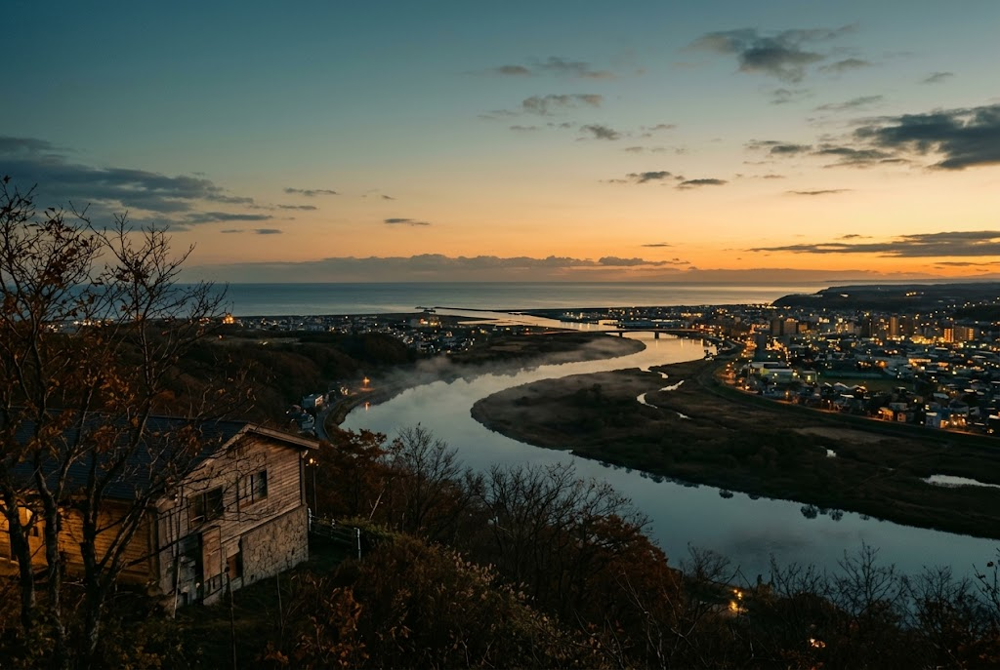
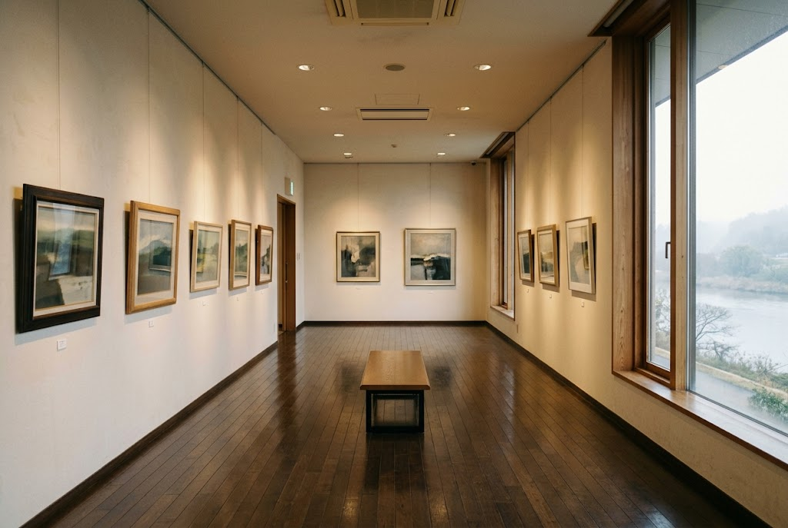
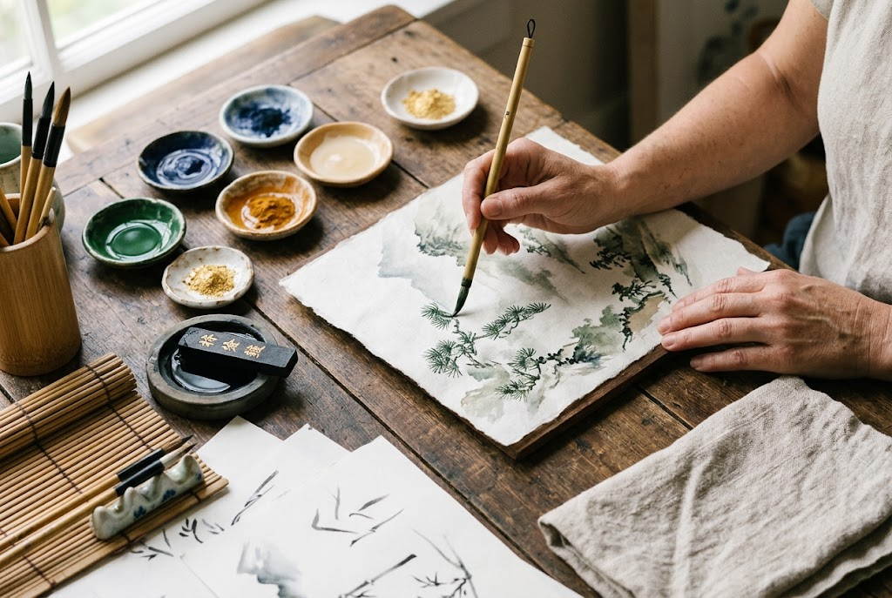

ABOUT

釧路市立美術館は、郷土で活躍する作家や地域ゆかりの作品を中心とした質の高い収蔵品を持ち、常設展や特別展を通じて地域文化の発信に努めています。
釧路川を眼下に一望できる幣舞の高台に位置し、自然環境とも調和した立地が特徴です。
FEATURES
HISTORY

1992年11月、釧路市生涯学習センター（まなぼっと幣舞）の3階に「アートギャラリー」として開館。平成12年4月に「釧路市立美術館」へと名称を改めました。
市民の生涯学習の場の充実と、郷土ゆかりの作家の作品を収蔵・展示することで地域文化の振興を図る。それが創設の想いです。複合文化施設の一部として、作品収集や調査研究、展覧会、ワークショップなど多彩な活動を続けています。
RECOMMEND
3階からは釧路川を一望できます。所蔵作品は日本画、油彩、版画、彫刻、書など約380点。地元ゆかりの美術家の作品が中心で、定期的にワークショップが開かれています。

VOICE
遠くから見えてナンの建物だろうとずっと気になっていましたが、複数の施設が入居しているようで、3階にある美術館へ行きました。あまり広くはないようですが、涼しく快適です。
いいです。落ち着いた雰囲気です。個人の美術展は、最後に遺作があるときはしんみりします。